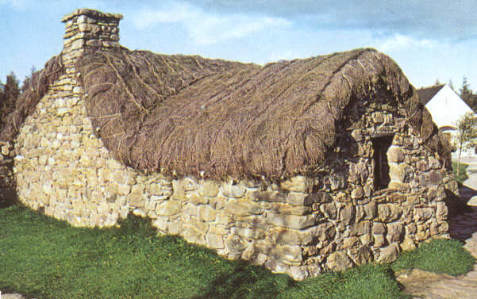

Culloden House
Strathpey by J.Anderson
Tune
Sequenced by Ch.Souchon



|
No Text known
"Slowish" Strathspey. Composed by unknown composer J. Anderson, first appearing in Morrison's Highland Collection (1812) then in Stewart-Robertson's "Athole Collection", 1884.. The composer may be a John Anderson who published a collection of Highland Strathspeys c. 1789 or an Anderson who was involved with preparatory work for Morrison's collection with Johnson, the Edinburgh engraver. |
Pas de texte connu
"Strathspey lent". Composé par un musicien inconnu J. Anderson, et publié d'abord dans la "Highland Collection" de Morrison (1812) puis dans l'"Athole Collection"de Stewart-Robertson en 1884. Ce compositeur peut être le John Anderson qui publia une collection de Strathspeys des Highlands vers 1789 ou un Anderson qui participa à la préparation de la collection Morrison avec Johnson, le lithograveur Edimbourgeois. |